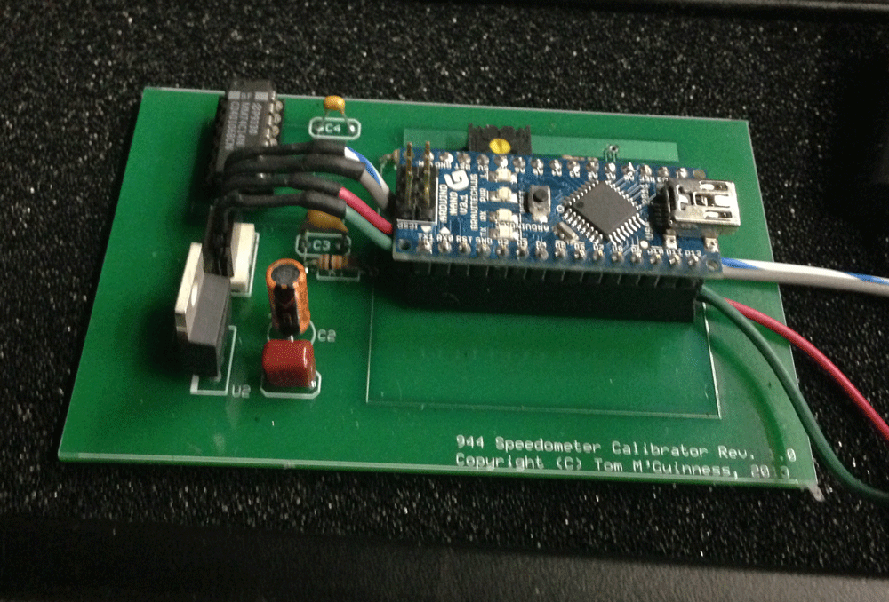
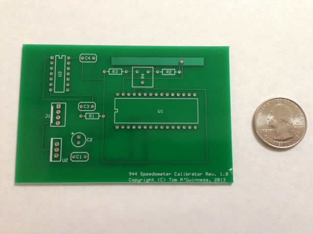
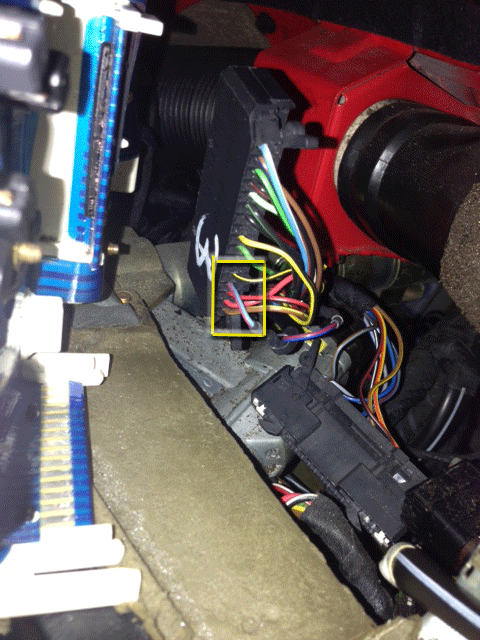

1986 944 Turbo Speedometer Calibrator
Copyright (c) 2013, Tom M'Guinness
IMPORTANT TERMS OF USE: This project involves technical electronic and automotive concepts that should not be imlemented without the appropriate technical background and knowedge of the systems involved. Any device built in whole or part based on this project is the sole responsibility of the person building that device. The author disclaims all representations and warranties, express or implied, regarding the information provided on this website, including without limitation any implied warranties of FITNESS FOR PURPOSE or MERCHANTABILITY, and the user hereby assumes all risks and waives any and all claims under all theories of law in connection with any and all use of these materials.

Introduction
This page
provides details on how I used an Arduino Nano to create a calibration box for
the speedometer on my 1986 Porsche 944 turbo.
Many late model 944 speedometers are
inaccurate.
In my case, the speedometer was more than 10% high
across the 160mph range.
When the car was going 70mph, the speedometer
would read 80 mph.
Some people have “fixed” this by
re-positioning the needle back 10mph or so.
This works ok for freeway speeds, but
typically doesn’t create accurate results across the full speedometer range.
Also, because the odometer is driven by the
same signal as the speedometer, that approach leaves the odometer to accumulate
more miles that it should.
You can also have your speedometer calibrated
by a VDO repair shop, but that can be very expensive and only works well if you
are using factory wheel and tire sizes.
The calibrator described below is cheap, works
across the whole mph range, corrects both the speedometer and odometer, and can
be adjusted to handle all wheel and tire combinations.
About the Arduino
The
Arduino is a small but powerful open-source
microcontroller. It is essentially
a small computer that is programmed in a version of C++ with physical inputs and
outputs to detect and control things connected to it (e.g., switches, LEDs,
sensors, motors, etc.). Creative
uses of the Arduino are nearly endless.
Just type “Arduino Projects” into Google to see examples of things people
are doing with Arduinos, from Animatronic hands to Zombie robots.
Read all about it at the official website:
www.Arduino.cc
The Arduino comes in many variations.
For convenience, I used the Arduino Nano, which is one of the smaller
Arduino microcontrollers generally available.
Bigger, more expensive Arduinos are available at Radio Shack, although
their size and cost make them less than ideal for the speedometer calibrator
described here. There is also an
Arduino Mini that is cheaper and smaller still, but it does not have the
built-in USB port like the Nano, so requires a bit more work to program.
If you are looking to build the cheapest possible version of this
calibrator, however, the Arduino Mini is worth considering.
How it Works
(For
those who want to geek-out)
The speedometer is driven by an electronic sensor in the
transmission, which generates eight ground pulses for every one full rotation of
the tire. When then sensor isn’t
creating a ground pulse, the signal from the sensor is open (i.e., not
connected to anything). For example, if the
tire is rotating once every 16 seconds, the sensor signal is grounded for one
second, then open for one second, then grounded for one second, and so on.
The faster the pulses, the faster the speedometer reads.
A stock 225/50/16 tire is about 83.66 inches in circumference and one
mile is 63,360 inches. That means
the tire rotates 63,360/83.66 times per mile, or about 757 times per mile.
At 60 mph, therefore, the tire is turning 757 times per minute, or a
little more than twelve and a half times per second.
Since the speedometer sensor creates eight ground pulses per rotation,
there are just over 100 ground pulses per second at 60 mph.
Remember that there are also 100 non-grounded periods per second as well,
meaning each ground pulse is equal to about 1/200th of a second.
The Arduino keeps track of time in milliseconds or
microseconds. A millisecond is
1/1000th of a second and a microsecond is 1/1,000,000th of
a second. At 1/200th of
a second, each ground pulse at 60 mph lasts .005 seconds or 5 milliseconds or
5000 microseconds (all ways of expressing 1/200th of a second),
followed by the same amount of time not grounded.
The speedometer calibrator works by measuring the amount of time between
ground pulses and then creating a replacement signal with a slightly faster or
slower pulse as needed.
Let’s say the speedometer reads 70mph when the car is really only moving
60mph. In this case, the Arduino
would measure 10,000 microseconds between ground pulses from the sensor, since
the car is actually going 60mph.
The Arduino then creates its own (slightly slower) pulse train as needed to make
the speedometer read 60 mph. The
correction factor can be built in to the firmware or can be calculated based on
where the trim-pot is set.
Hardware
The basic circuit I used is shown below. This circuit can be made up on a breadboard in a matter of minutes once you have the parts in hand. The Arduino is the core component in the circuit of course, but take note of the other two chips. The 74c14 is an “inverting Schmitt Trigger” that cleans up transient spikes from the sensor (so that the spikes are not interpreted as pulses by the lightning fast Arduino). Google “Schmitt Trigger” to learn more about how it creates clean square pulses from otherwise messy signals. The LM2940-10 is a voltage regulator very similar to the more common 7812 series. The LM2940 series, however, is designed to operate better in the automotive environment where transient spikes are the norm. The resistors and potentiometer connected to A0 on the Arduino are optional, and there to permit on-the-fly adjustments (with supporting change to the firmware).
| PART DESCRIPTION |
| U1 – Arduino Nano |
| U2 – LM2940-10 (Automotive voltage regulator) |
| U3 – 74c14 (Hex Schmitt Trigger) |
| C1 – .47uF capacitor |
| C2 – 22uF capacitor |
| C3 – .01uF capacitor |
| C4 – .1uF capacitor |
| R1 – 10K ¼ watt resistor |
| R2 – 500 ohm ¼ watt resistor |
| R3 – 500 ohm ¼ watt resistor |
| R4 – 5K trimmer potentiometer |
| J1 – 4-pin .1” header |
| Pin 1 –
Factory Speedometer Sensor Signal |
| Pin 2 – Calibrated Output to Speedometer |
| Pin 3 –
Switched 12 volts |
| Pin 4 – Chassis Ground |
I created a simple circuit board using the www.espresspcb.com, as shown below, using their 3-board mini service. This is a fairly painless way to get a professional looking pcb made up, but for one-off individual boards it cannot compete with places like www.batchpcb.com or www.fritzing.org. Future updates to this page may include downloadable PCB files.

In order to install this circuit in the car, the
factory harness wire carrying the speedometer sensor signal must be cut and
routed into Pin 1 of the calibrator. Pin 2 of the calibrator then feeds the
speedometer with the new pulse created by the Arduino.
The sensor wire is the blue wire with red stripe in the middle edge
connector on the back of the gauge cluster.
Pull the gauge cluster out (see
www.clarks-garage.com for instructions) to
gain access to the edge connector.
Cut the blue/red wire on pin 14 of the middle edge connector and connect the
sensor side of the cut wire to Pin 1 on the calibrator, and connect the
speedometer side of the blue/red wire to Pin 2 on the calibrator.

The basic idea is to re-route the speedometer sensor
signal from the transaxle through the calibrator, as shown in the diagram above.
The sensor signal can be cut anywhere between the sensor and the
speedometer, though I found it easiest to pull the cluster and cut the wire
right where it feeds into the middle edge connector, as shown in the photo below
(boxed in yellow).

Firmware
With the circuit built, the Arduino needs to be programmed to function as a calibrator. If you use the Arduino Nano as shown in the schematic, loading the software is quite simple once you have the Arduino programming environment up and running on your computer. Refer to www.arduino.cc to download the programming system (it’s free). The basic source code I used to make the calibrator work is set out below. The Variable "calFactor" is the software calibration factor. In the code below, it is set for my speedometer. You will need to adjust the number up or down as needed to calibrate you speedometer. Generally, a value less than 1 slows down the speedometer and a value greater than 1 speeds it up. This code assumes your speedometer is off by a fixed percentage across the MPH range, as is typical. If your speedometer is off my the same MPH at every speed (e.g. always 5 mph fast regardless if you are going 10mph or 110mph) then you may be better off re-positioning the needle on the gauge or change the code so that it changes the frequency by the same mph across the full range. The code below relies solely on the calFactor to adjust the speedometer. If desired, additional code using the Arduino's AnalogRead funtion can be added to allow adjustments via the trim pot connected to pin A0 of the Arduino. Future updates to this page may include examples of that approach.
|
//1986 Porsche 944 Turbo Speedometer Calibrator //Public Domain
//Schmitt trigger should bypass filer and pull-up resistor //Use LM2940-10 with decoupling caps per datasheet to power Arduino in automotive setting //Arduino Pin 7 supplies modified signal for speedometer const int debounce = 2500; const int speedometerPin = 7;
const int sensorPin = 3;
int pulseState = LOW;
volatile unsigned long currentMicros = 0;
volatile unsigned long previousMicros= 0;
volatile unsigned long currentSpeed = 0;
volatile unsigned long previousSpeed = 0; volatile unsigned long interval = 0;
unsigned long modInterval = 0;
float calFactor = .91; // decrease
to slow down speedometer
void setup() { pinMode (13, OUTPUT);
pinMode(speedometerPin, OUTPUT);
pinMode(sensorPin, INPUT);
digitalWrite (sensorPin, HIGH);
attachInterrupt (1, iSr, FALLING);
}
void loop() {
noInterrupts();
modInterval=interval;
interrupts();
currentMicros = micros();
if
(currentMicros-previousSpeed<1000000)
{ if (currentMicros - previousMicros>((modInterval/2)/calFactor))
{
previousMicros = currentMicros;
if (pulseState == LOW) pulseState = HIGH; else pulseState = LOW digitalWrite(13, pulseState); //to blink onboard LED digitalWrite(speedometerPin, pulseState); }
} } void iSr() {
currentSpeed=micros();
if
(digitalRead(sensorPin)==LOW)
{
if ((currentSpeed - previousSpeed) > debounce)
{
interval = currentSpeed - previousSpeed;
previousSpeed=currentSpeed;
}
} } |